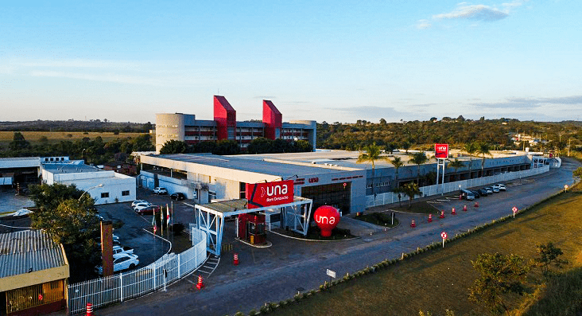
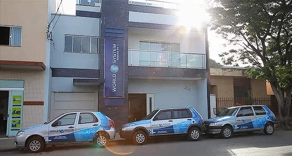

30 de Dezembro de 1994
Um breve resumo sobre quem eu sou
Natural da cidade de Luz em Minas Gerais, filho de pais incríveis, cresci como um garoto curioso buscando sempre entender como as coisas funcionavam pra aprender um pouco mais.
Sempre trouxe para a minha casa novas experiências as quais adorava compartilhar com a minha família, que apoiavam todas as minhas decisões e incentivavam minhas metas.
Cursos se tornaram uma forma de diversão e esportes se tornaram uma paixão.
Comecei com doze anos como jovem aprendiz na empresa de um amigo da família, empresa que prestava serviços de manutenção em computadores e foi dessa primeira experiência de trabalho que surgiu o interesse pela tecnologia. Com o passar dos anos trabalhei em algumas outras empresas voltadas para técnologia e também me arrisquei como auxiliar de escritório, adquirindo experiência de uma nova área que hoje me acrescenta muito em minha atual profissão como Analista de Sistemas.
20 de Março de 2017
Minha jornada acadêmica

Após o término do ensino fundamental e médio, adentrei ao mundo acadêmico inicialmente na antiga faculdade Alis, no bacharel em Sistemas de informação. Após conclusão de dois semestres me arrisquei por um período apenas em uma universidade pública, a Universidade Federal de Viçosa no campus de Rio Paranaíba (UFV RP), realizando o mesmo curso.
Difundi um pouco dos meus conhecimentos em esportes monitorando atividades extracurriculares, participei de grupos de estudos e adquiri grande conhecimento estudando por lá, mas por motivos pessoais minha jornada acadêmica pelo menos por ali chegou ao fim.
Após retornar para Luz, fiz a reentrada no bacharel em Bom Despacho/MG, dessa vez com a faculdade recebendo o novo título de Universidade, a Universidade UNA.
Concluí o bacharel em Sistemas de Informação em 2021, já trabalhando como analista em minha área e com conhecimento pronto para ser utilizado no mercado de trabalho.
17 de Janeiro de 2019
Minha profissão e a empresa

Enquanto ainda em busca da alcunha do título de bacharel em Sistemas de Informação, me integrei a World System, empresa de sistemas comerciais que é referência no quesito ERP no mercado da minha região. Acolhido e guiado por excelentes profissionais busquei crescimento profissional, evoluindo como analista e buscando resultados também para o crescimento da empresa, nada mais justo não é mesmo?
Ainda atuo como analista e almejo me tornar um desenvolvedor, aplicando experiências adquiridas ao longo da minha carreira e educação.
Se chegou até aqui, gostaria de lhe oferecer meus mais sinceros agradecimentos, a jornada é longa mas o fim é gratificante. Assim espero! 🤞
"Ninguém disse que seria facil e isso que torna a vida uma infinita busca, se você não tivesse uma missão tudo seria tão tediante."
- Felipe Schindler.